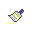

Objects can leave a trace in the Graphics View when they are moved. Use the Context Menu to switch this  Trace On. Then, modify the construction so that the object whose trace you turned on changes its position and leaves a trace.
Note: You can turn off the trace of an object by un-checking Trace On in the Context Menu. The menu item Refresh Views in the View menu clears all traces.
You can also let GeoGebra automatically create the locus of
a point by either using tool
 Locus with the mouse, or enter the command Locus into the Input field.
Locus with the mouse, or enter the command Locus into the Input field.
Note: The point whose locus you would like to create must depend on another point’s movement, which is restricted to move along an object (e. g., line, segment, circle).
Example:
· Create a segment a between the points A = (-1, -1) and B = (1, -1).
· Place a point C on the segment, so it is restricted to move along segment a.
· Create a point P that depends on point C (e. g., P = (x(C), x(C)^2)).
· Use either tool or command Locus in order to create the locus of point P in dependence on point C:
o
Tool  Locus: Click first on point P
and then on point C.
Locus: Click first on point P
and then on point C.
o Command Locus: Enter Locus[P, C] into the Input Bar and hit the Enter-key.
·
Note: The
locus created in this example is the graph of a parabola on the interval
[-1, 1].